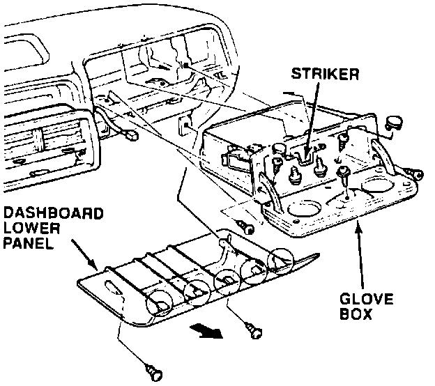
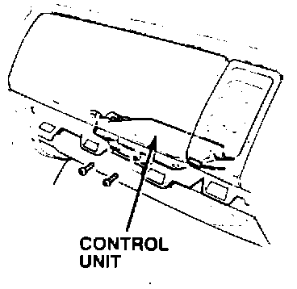
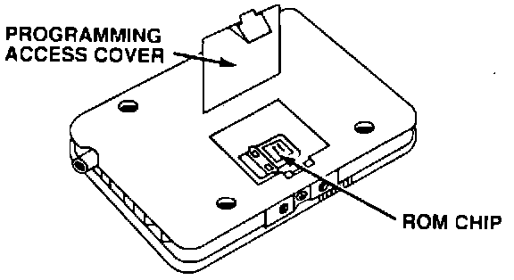
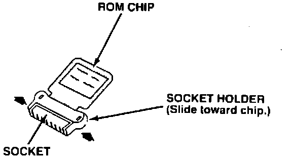
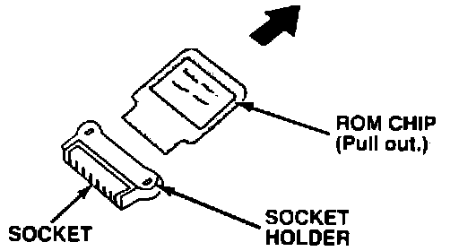
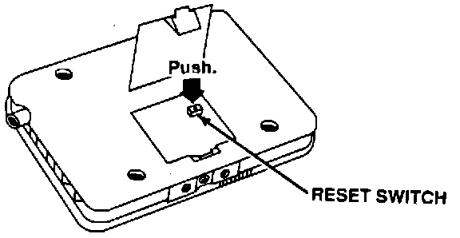

Security System - Control Unit Malfunction
April 23, 1990BULLETIN NO
90-002
YEAR
1990
MODEL
INTEGRA
VIN APPLICATION
ALL with SECURITY SYSTEM
Security System Control Unit Malfunction
(Supersedes 90-002, dated March 19, 1990)
SYMPTOM
^ The security system will not set, or ...
^ The parking lights stay on, or ...
^ The starter does not crank.
NOTE:
The symptom can be eliminated by removing the No. 13 fuse (15A) from the dash fuse box for 10 seconds to clear the security system control unit.
PROBABLE CAUSE
Electrical interference from other components in the car causes the security system control unit to malfunction. (Clearing the control unit eliminates the problem only until the interference occurs again.)
CORRECTIVE ACTION
Replace the original security system control unit with the updated control unit listed under PARTS INFORMATION.
NOTE:
The original control unit's ROM chip must be transferred to the updated control unit. Clean your hands before handling the chip, and handle it by the edges only - do not touch the gold electrical contacts.
1. Disarm the security system with the remote control.

2. Remove the six glove box screws and the striker, then disconnect the glove box light connector. Remove the glove box from the dashboard.
3. Remove the two dashboard lower panel screws. Pull evenly on the top of the panel to release the panel's clips.

4. Remove the security system control unit from the lower dash frame. Transfer the control unit mounting bracket to the updated control unit.

5. Remove the control unit's programming access cover.

6. Release the ROM chip by sliding the socket holder toward the chip.

7. Gently pull the ROM chip out of the socket and set it on a clean, non-metallic surface, contact side up.
8. Remove the access cover from the updated control unit and slide the socket holder open.
9. Insert the ROM chip into the socket, label side up, then slide the socket holder back to secure the chip.

10. Push the control unit reset button, then reinstall the access cover.
11. Install the updated control unit, then reinstall the dashboard lower panel and the glove box.
PARTS INFORMATION
Control Unit: P/N 08E50-SK7-201R1
NOTE:
Updated control units are remanufactured, and can be identified by a green dot after the serial number.
WARRANTY CLAIM INFORMATION
In warranty:
The normal warranty applies.
Out-of-warranty:
Any repair performed after warranty expiration may be eligible for goodwill consideration by the District Service Manager. You must. request consideration, and get the DSM's decision, before starting work.
Operation number: 050101
Flat rate time: 0.4 hour
Failed P/N: 08E50-SK7-200R1
Defect code: 068
Contention code: B99